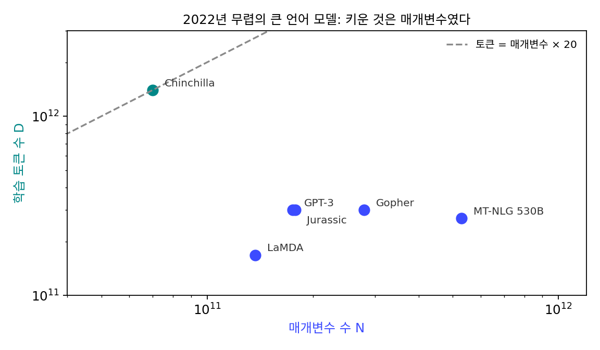
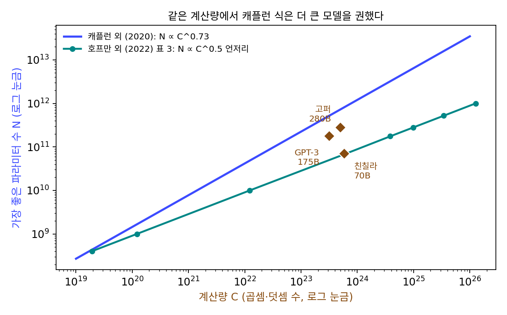
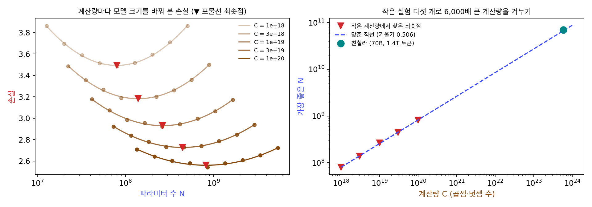
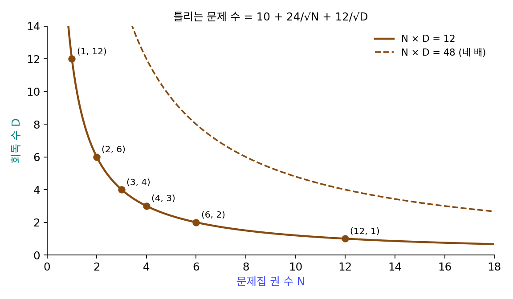
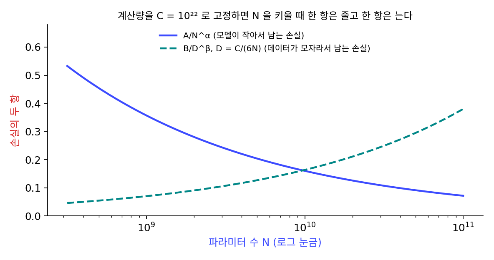
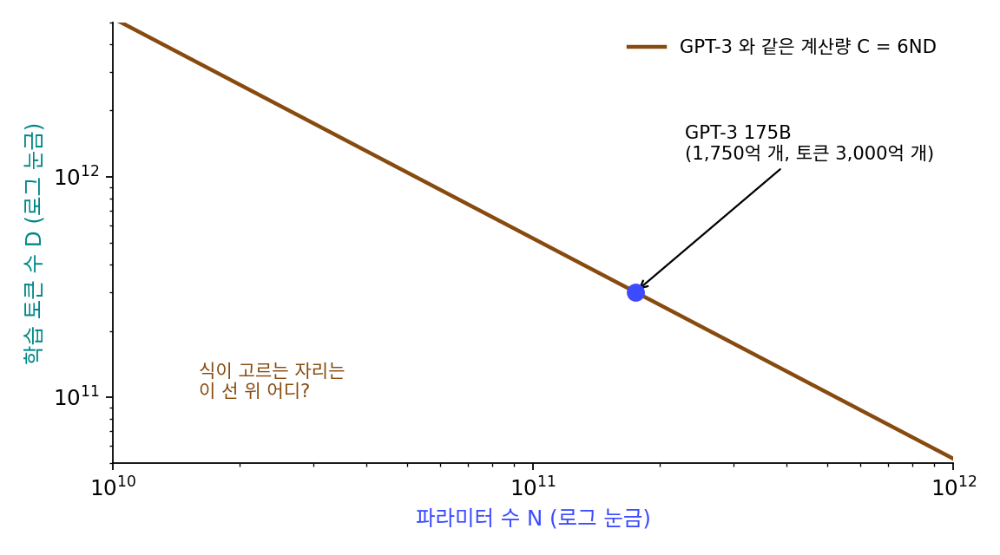
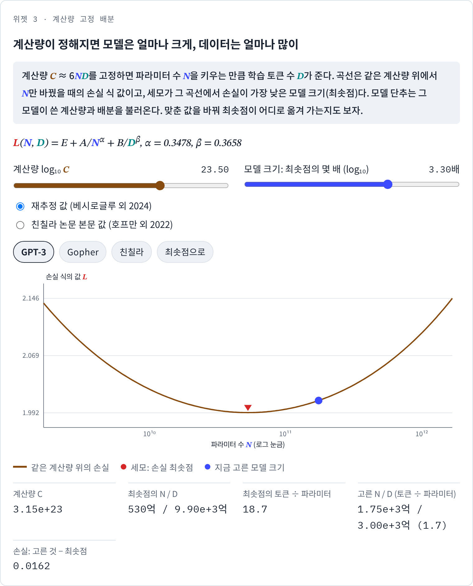

스케일링 법칙: 계산량이 정해지면 모델과 데이터를 얼마나
μTransfer 로 크기마다 학습률을 다시 찾는 비용은 덜었지만, 모델 크기 자체를 무엇으로 정하느냐는 물음이 남는다. 학습에 쓸 수 있는 계산은 정해져 있는데, 파라미터를 N개, 학습 토큰을 D개로 하면 계산량은 대략 C ≈ 6ND다. 토큰 하나가 앞으로 지나갈 때 파라미터 하나마다 곱셈과 덧셈이 한 번씩, 역전파에서 그 두 배가 들기 때문이다. 같은 C로 큰 모델을 적은 토큰으로 학습할 수도, 작은 모델을 많은 토큰으로 학습할 수도 있다. 모델이 너무 작으면 데이터를 다 담지 못하고 너무 크면 한 번도 제대로 학습되지 못하는데, 그 사이 어디가 가장 좋을까? 그리고 그것을 큰 모델을 실제로 학습하기 전에 알 수 있을까?
역사: 캐플런의 0.73, 친칠라의 0.5
2020년 1월 OpenAI 의 재러드 캐플런(Jared Kaplan)과 동료들은 「신경 언어 모델의 스케일링 법칙(Scaling Laws for Neural Language Models)」에서 언어 모델의 손실이 파라미터 수, 데이터 양, 계산량에 대해 일곱 자릿수가 넘는 범위에서 거듭제곱 법칙을 따른다고 보고했다. 폭이냐 깊이냐 같은 설계의 세부는 넓은 범위에서 거의 상관이 없었다. 그들은 계산량이 늘 때 가장 좋은 모델 크기는 C^0.73, 토큰 수는 C^0.27 로 키우라고 했다. 계산을 열 배 늘리면 모델은 5.4배, 데이터는 1.9배다. 큰 모델을 적당한 데이터로 학습하고 수렴하기 훨씬 전에 멈추는 것이 계산을 가장 잘 쓰는 길이라는 결론이었다. 그 뒤 GPT-3 를 비롯한 큰 모델 여럿이 토큰 3,000억 개 언저리로 학습되었다.
2022년 3월 딥마인드의 조던 호프만(Jordan Hoffmann)과 동료들은 「계산 최적 큰 언어 모델 학습하기(Training Compute-Optimal Large Language Models)」에서 다른 답을 냈다. 파라미터 7,000만 개에서 160억 개가 넘는 모델 400 개 이상을 토큰 50억 개에서 5,000억 개로 학습해 보니, 모델 크기와 토큰 수를 같은 비율로 키워야 했다. 모델을 두 배로 하면 토큰도 두 배다. 그들은 이 결론대로 파라미터 700억 개 모델을 토큰 1.4조 개로 학습해 친칠라(Chinchilla)라 불렀다. 계산량은 파라미터 2,800억 개, 토큰 3,000억 개의 고퍼(Gopher)와 같은데, 친칠라가 고퍼, GPT-3, 5,300억 개짜리 MT-NLG 를 여러 태스크에서 앞섰고 MMLU 평균 정확도는 67.5% 로 고퍼보다 7점 넘게 높았다.

두 연구의 답이 갈린 것은 학습률 스케줄 때문이기도 했다. 친칠라 논문에 따르면 캐플런 팀은 모든 모델에 같은 토큰 수와 같은 학습률 스케줄을 썼다. 1,300억 토큰에 맞춘 코사인 일정(학습률을 코사인 곡선 모양으로 줄여 가는 일정)으로 학습하는 도중의 손실을 「더 적은 토큰으로 학습한 모델의 손실」로 읽으면, 그 토큰 수에 맞춘 일정으로 끝까지 학습했을 때보다 손실이 높게 잡힌다. 그래서 작은 모델을 데이터를 더 써서 학습하는 쪽의 효과를 낮게 보았고, 모델을 데이터보다 빨리 키우라는 결론으로 기울었다. 친칠라 팀은 일정의 길이를 학습 토큰 수에 맞추는 것이 모델 크기와 상관없이 가장 좋았다고 적었다. 학습률을 잘못 다루면 무엇을 키울지에 대한 판단까지 틀어진 것이다.


학습 도중의 손실을 읽어서 결론을 냈다는 거죠? 토큰 수마다 따로 끝까지 학습했으면 간단했을 텐데요.

모델 크기마다, 토큰 수마다 처음부터 끝까지 학습하면 실험 수가 곱으로 늘어요. 친칠라 팀은 그렇게 해서 모델 400 개 넘게 학습했고요.

그러면 도중의 손실을 읽는 건 계산을 아끼는 지름길이었네요. 실행 하나에서 토큰 수가 다른 점을 여러 개 얻으니까요.

그래요. 그 지름길이 학습률 스케줄과 엮여 있다는 것을 짚은 건 2년 뒤의 친칠라 논문이었어요. 코사인 일정이 1,300억 토큰에 맞춰 있으면, 중간 지점의 학습률은 아직 덜 내려온 값이에요.

아, 학습률이 아직 큰 채로 잰 손실이니까 끝까지 내린 손실보다 높게 나오는군요. 작은 모델에 데이터를 더 쓰는 배분이 손해처럼 보였겠네요.

그럼 크기와 토큰 수를 바꿔 가며 끝까지 학습한 결과가 있으면, 같은 계산으로 손실이 가장 낮은 배분은 어떻게 셈해요?
손실 식 하나로 배분하기
친칠라 논문은 세 가지 방법으로 배분을 정했는데, 그 가운데 하나는 손실을 다음 꼴의 식으로 맞추는 것이었다.
둘째 항은 모델이 작아서 남는 손실, 셋째 항은 데이터가 모자라서 남는 손실이다. C를 고정하면 D = C/(6N)이라 N을 키울수록 둘째 항은 줄고 셋째 항은 늘므로, 두 항의 합이 가장 작은 곳을 미분으로 찾으면 위의 거듭제곱이 나온다. α와 β가 같으면 지수가 둘 다 ½, 곧 「모델과 데이터를 같은 비율로」가 된다.
맞춘 상수에도 사연이 있다. 친칠라 논문 본문에 실린 값(E = 1.69, A = 406.4, B = 410.7, α = 0.34, β = 0.28)을 그대로 넣으면 친칠라의 계산량에서 가장 좋은 모델은 325억 개, 토큰은 파라미터의 92.8배로 나와, 같은 논문의 다른 두 방법이 낸 「파라미터의 20배쯤」과 맞지 않는다. 에포크 AI 의 타마이 베시로글루(Tamay Besiroglu)와 동료들은 2024년 논문 「친칠라 스케일링: 재현 시도(Chinchilla Scaling: A replication attempt)」에서 논문 그림의 점들을 다시 읽어 맞추고, 본문 값이 반올림으로 크게 치우쳤고 맞추기도 덜 끝난 채 멈췄다고 보고했다. 그들이 다시 맞춘 값은 E = 1.8172, A = 482.01, B = 2,085.43, α = 0.3478, β = 0.3658 이다. 이 장의 계산과 위젯은 다시 맞춘 값을 쓴다.
다시 맞춘 값으로는 지수가 β/(α + β) = 0.513, α/(α + β) = 0.487 이다. 계산을 열 배 늘리면 모델은 3.26배, 데이터는 3.07배로, 캐플런의 5.37배와 1.86배와 달리 거의 같은 비율이다. 고퍼와 친칠라의 계산량에서 식이 고르는 배분은 다음과 같다.
| 모델 | 실제 N / D | 계산량 C | 식이 고르는 N / D | 토큰 ÷ 파라미터 (실제 → 식) |
|---|---|---|---|---|
| 고퍼 | 2,800억 / 3,000억 | 5.04 × 10²³ | 675억 / 1.25조 | 1.1 → 18.5 |
| 친칠라 | 700억 / 1.4조 | 5.88 × 10²³ | 730억 / 1.34조 | 20.0 → 18.4 |
친칠라는 식이 고르는 배분과 거의 같은 자리에 있고, 고퍼는 같은 계산으로 모델을 네 배쯤 작게, 데이터를 네 배쯤 많이 쓰는 편이 나았다는 뜻이다. 이렇게 손실이 모델 크기, 데이터 양, 계산량에 대해 거듭제곱 꼴로 줄어든다는 관찰과, 그것으로 계산량을 어디에 쓸지 정하는 규칙을 스케일링 법칙 (손실이 규모에 대해 거듭제곱으로 줄어든다는 관찰과 그 배분 규칙 / scaling laws)이라 한다.
이 법칙은 작은 실험으로 큰 실험을 겨눌 수 있어서 쓸모가 있다. 친칠라 논문의 둘째 방법을 흉내 내 보자. 위의 손실 식을 참이라 놓고, 계산량 10¹⁸, 3 × 10¹⁸, 10¹⁹, 3 × 10¹⁹, 10²⁰ 다섯 가지에서 모델 크기를 아홉 가지씩 바꿔 「학습」했다고 하자. 실제 학습에서 손실이 실행마다 조금씩 달라지는 것을 흉내 내려고 손실마다 표준편차 0.01 의 노이즈를 섞었다. 계산량마다 손실을 log N에 대한 포물선으로 맞춰 손실이 가장 낮은 모델 크기를 찾으니 7,970만, 1억 3,940만, 2억 6,440만, 4억 4,530만, 8억 2,200만 개였다. 이 다섯 점에 직선을 맞추면 log Nopt 대 log C의 그래디언트가 0.506 으로, 식의 참값 0.513 에 가깝다. 그 직선을 친칠라의 계산량까지, 가장 큰 실험의 5,880배까지 늘이면 669억 개가 나온다. 식의 참 최적 730억 개, 실제 친칠라 700억 개와 10% 안쪽이다.

ML에서: 계산 최적보다 더 오래 학습하기
친칠라의 배분은 학습에 드는 계산만 따진 답이지만, 모델을 다 만든 뒤에는 그 모델로 답을 내는 계산(추론)이 사용자 수만큼 든다. 메타의 LLaMA 논문(투브롱 외, 2023)은 이 점을 짚었다. 호프만 외의 배분대로라면 토큰 수천억 개로 멈출 크기의 모델이, 그 몇 배인 토큰 1조 개 규모를 넘겨도 성능이 계속 좋아졌다고 적었다. 추론 비용까지 치면 계산 최적보다 작은 모델을 훨씬 많은 토큰으로 오래 학습하는 편이 낫다. 스케일링 법칙이 주는 것은 정답 하나가 아니라, 무엇을 아끼고 싶은지 정했을 때 그 아래에서의 배분이다.
문제 12. 시험 전 공부 계획
시험까지 공부할 수 있는 양은 「문제집 권 수 N × 회독 수 D = 12」로 정해져 있고, 경험상 틀리는 문제 수는 10 + 24/√N + 12/√D이다. (가) (N, D) = (1, 12), (2, 6), (3, 4), (4, 3), (6, 2), (12, 1) 가운데 틀리는 문제가 가장 적은 것은? (나) 공부할 수 있는 양이 48 로 네 배가 되면 가장 좋은 배분은 어떻게 바뀌는가? (다) 이 문제와 스케일링 법칙의 셈은 어디가 같은가?

김민준: 회독이 중요하다고들 하니까 (2, 6) 아니면 (3, 4) 겠죠. 한 권을 여러 번이요.여섯 가지를 다 넣어 볼까요?

37.46, 31.87, 29.86, 28.93, 28.28, 28.93 이요. (6, 2) 가 가장 적어요. 권 수를 늘리는 배분이 낫네요. 24 가 12 보다 커서 권 수가 모자라 틀리는 문제 수가 더 컸던 거예요.
정수만 넣어 보지 말고 연속으로 풀어 볼게. ND = 12 아래에서 두 항의 합이 가장 작은 곳은… N/D = 24/12 = 2 인 N = √24 = 4.90, D = 2.45 야. 정수로는 (4, 3)과 (6, 2) 사이고.
48 이면?
(12, 4)와 (16, 3)이 22.93 으로 같고 (8, 6)은 23.38 이야. 권 수도 회독도 함께 늘었어.
공부량이 네 배가 될 때 가장 좋은 권 수는 몇 배가 되었죠? 연속으로 보면요.
두 지수가 ½ 로 같으니까 N/D = 2 가 늘 유지되고, 둘 다 √4 = 2 배예요. 4.90 이 9.80 으로요.
두 지수가 서로 다르면요?

비율도 지수에 따라 기울겠네요. 스케일링 법칙에서 α = β 면 모델과 데이터를 같은 비율로 키우게 되고요. 라그랑주 승수로 곱이 일정한 조건 아래 합을 최소화하던 연습 문제와 식의 꼴(곱이 정해진 채 두 항의 합을 최소화)이 같네요.

동아리 예산으로 간식이랑 발표 장비를 살 때, 한쪽만 몰아 사면 손해죠. 계산이 예산이고, 모델과 데이터가 간식과 장비예요.
문제 13. 지수는 어디서 오는가
손실 식 𝓛 = E + A/N^α + B/D^β 에서 C = 6ND를 고정한다. (가) D를 N으로 나타내 손실을 N 하나의 함수로 쓰고, 미분이 0 인 곳에서 Nopt ∝ C^(β/(α+β)) 임을 보여라. (나) 친칠라 논문 본문 값(α = 0.34, β = 0.28)과 α = β = 0.3 에서 계산을 10배 늘릴 때 N과 D는 몇 배가 되는가? 다시 맞춘 값에서 나온 N × 3.26, D × 3.07 과 비교하라. (다) 계산이 늘 때 모델을 더 빨리 키우라는 답이 나오려면 α와 β 가운데 어느 쪽이 커야 하는가? 뜻은 무엇인가?

김민준: (가)는 D = C/(6N)을 넣으면 B/D^β = B(6N/C)^β 니까, 손실이 AN^(−α) + B(6/C)^β N^β 예요. N으로 미분해 0 으로 놓으면 αAN^(−α−1) = βB(6/C)^β N^(β−1), 정리하면 N^(α+β) ∝ C^β. 그래서 Nopt ∝ C^(β/(α+β)) 이요.(나)는 본문 값이 β/(α + β) = 0.452 라 N × 2.83, D × 3.53. α = β 면 둘 다 3.16 이야. 다시 맞춘 값(0.513)은 N 쪽이 조금 빠른데, 본문 값은 거꾸로 D 쪽이 빨라.
본문 값으로는 데이터를 더 빨리 키우라고 나오고, 다시 맞춘 값으로는 거의 같은 비율이네요. 지수 차이가 0.06 쯤인데 결론이 그렇게 갈릴까요?
10배에서는 2.83 과 3.26 정도 차이라 작아 보여요. 그런데 친칠라처럼 가장 큰 실험의 수천 배까지 늘이면…
본문 값으로 친칠라의 계산량에서 가장 좋은 모델이 325억 개, 다시 맞춘 값으로 730억 개였어.

두 배 넘게 갈렸네. 지수 차이가 거듭제곱으로 쌓여서, 작은 실험에서 지수를 조금만 틀려도 멀리 늘인 끝에서는 크게 틀어지는 거야.

(다)는 β/(α+β) 가 ½ 보다 크려면 β > α. 데이터 항이 더 빨리 줄어든다는 건 데이터를 조금만 늘려도 그 항이 금방 작아진다는 뜻이니까, 남는 계산을 모델에 쓰는 게 낫다는 거네요. 캐플런의 0.73 이 계산을 모델에 더 쓰라는 배분이었고요.
시험 점수를 그래프로 그려 다음 학기를 예측했는데 기울기를 조금 잘못 읽어서 4학년쯤엔 만점이 넘게 나온 적이 있어요.
문제 14. GPT-3 를 다시 짠다면
GPT-3 의 가장 큰 모델은 파라미터 1,750억 개를 토큰 3,000억 개로 학습했다. 다시 맞춘 손실 식을 쓴다. (가) 계산량 C = 6ND는 얼마이고, 같은 계산량에서 식이 고르는 N과 D는? (나) 식의 손실은 GPT-3 의 배분과 식이 고른 배분에서 각각 얼마인가? (다) GPT-3 와 같은 손실을 식이 고르는 배분으로 내려면 계산이 얼마나 드는가?

김민준: (가) 6 × 1,750억 × 3,000억 = 3.15 × 10²³ 이에요. 식으로 손실이 가장 낮은 배분을 찾으면 N = 530억, D = 0.99조, 토큰이 파라미터의 18.7배요. (나)는 GPT-3 배분이 2.0085, 식의 배분이 1.9923. 차이가 0.016 밖에 안 나요. 이 정도면 그냥 GPT-3 처럼 해도 되겠는데요.0.016 이 작은지 큰지는 무엇과 견줘야 알 수 있을까요?
아, 같은 손실을 내는 데 계산이 얼마나 드는지로 보면 되겠네요. 식이 고르는 배분으로 2.0085 를 내려면 1.92 × 10²³, GPT-3 계산의 0.61배면 돼요. 거꾸로 보면 GPT-3 는 같은 결과에 계산을 1.64배 썼어요.
손실 식에서 E 는 키워도 안 줄어드니까, 줄일 수 있는 건 둘째·셋째 항뿐이야. GPT-3 는 모델이 작아서 남는 항이 0.059 인데 데이터가 모자라서 남는 항이 0.132 로 두 배 넘어. 줄일 수 있는 두 항 가운데 데이터 항이 컸던 거지.

손실 차이는 거듭제곱 법칙 위에서 작아 보이기 마련이에요. 그래서 스케일링 법칙에서는 손실 차이를 「같은 손실을 내는 데 드는 계산」으로 바꿔 읽는 일이 많아요. 친칠라 논문이 「모델들이 학습이 덜 되었다」고 한 것도 이 뜻이에요.
곡선 끝에서는 손실의 작은 차이가 가로축의 큰 차이라는 거네요. 로그 함수가 큰 값에서 납작해서, 함숫값을 조금 올리려면 입력을 몇 배씩 키워야 하는 거랑 같아요.
평점 4.4 와 4.5 는 비슷해 보이는데 그 0.1 을 올리려고 한 학기를 갈아 넣어야 하잖아요. 손실 차이 0.016 이 그 0.1 이에요.
위젯 3에서 GPT-3 를 불러와, 같은 계산량 곡선의 최솟점에서 GPT-3 의 자리가 얼마나 떨어져 있는지 확인해 보세요.
